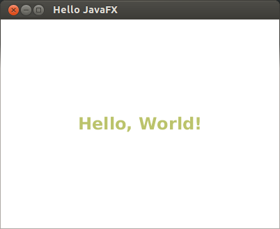

目前礙於 Oracle 授權的問題，JavaFX runtime 可以隨著 JavaFX 應用程式散佈，但不能單獨散佈 JavaFX runtime 本身，所以 Maven Central 不會有 JavaFX JAR (jfxrt.jar)。
另外 jfxrt.jar 好像會以相對路徑相依於其他 native libraries（例如 Windows 的 glass.dll，Linux 的 libglass.so 或 Mac OS X 的 libglass.dylib）？這部份也不是 Maven repository 可以管理的。
|
|
不過在內建 JavaFX 2.2.4 的 Java SE 7u10 (Linux 64-bit) 上有一些有趣的發現。雖然有看到 $JAVA_HOME/jre/lib/amd64/libglass.so，但即便把 $JAVA_HOME/jre/lib/jfxrt.jar 移到其他地方，執行期並不會丟出 native libraries 找不到的錯誤，是因為沒有用到特定的功能嗎？ |
由於 JavaFX 最終將完全被整進 JRE，到時候 JavaFX 也不再是個需要額外宣告的 dependency，建議暫時採用 system scope 直接引用 JavaFX 安裝位置的 JAR 檔。
<dependency>
<groupId>com.oracle</groupId>  <artifactId>javafx</artifactId>
<version>2.0</version>
<scope>system</scope>
<systemPath>${java.home}/lib/jfxrt.jar</systemPath>
</dependency>
<artifactId>javafx</artifactId>
<version>2.0</version>
<scope>system</scope>
<systemPath>${java.home}/lib/jfxrt.jar</systemPath>
</dependency>
大家習慣用 com.oracle:javafx 來表示 JavaFX，但 javafx:javafx-rt 會不會更好？跟 官方建議的 Sun JARs 命名方式比較相近…
|
這樣的用法也符合 Maven 對 system scope 的定義：
Dependencies with the scope system are always available and are not looked up in repository. They are usually used to tell Maven about dependencies which are provided by the JDK or the VM. Thus, system dependencies are especially useful for resolving dependencies on artifacts which are now provided by the JDK, but where available as separate downloads earlier.
下面用 Hello World 來做說明：
$ mvn archetype:generate \
-DgroupId=com.example.javafx \
-DartifactId=javafx-examples \
-Dpackage=com.example.javafx
$
$ cd javafx-examples
$ rm src/main/java/com/example/javafx/App.java src/test/java/com/example/javafx/AppTest.java
$
$ vi pom.xml <1>
$ vi src/main/java/com/example/javafx/HelloWorld.java
$ mvn install
$ mvn exec:java -Dexec.classpathScope=compile -Dexec.mainClass=com.example.javafx.HelloWorld <2>
| 宣告 JavaFX dependency。 | |
|
執行 Hello World

|
HelloWorld.javapackage com.example.javafx;
import javafx.application.Application;
import javafx.scene.Scene;
import javafx.scene.layout.StackPane;
import javafx.scene.layout.StackPaneBuilder;
import javafx.scene.paint.Color;
import javafx.scene.text.Font;
import javafx.scene.text.FontWeight;
import javafx.scene.text.TextBuilder;
import javafx.stage.Stage;
public class HelloWorld extends Application {
public static void main(String[] args) {
launch(args);
}
@Override
public void start(Stage stage) {
StackPane root = StackPaneBuilder.create()
.children(
TextBuilder.create()
.text("Hello, World!")
.fill(Color.rgb(187, 195, 107))
.font(Font.font("SansSerif", FontWeight.BOLD, 24))
.build()
)
.build();
stage.setScene(new Scene(root, 400, 300));
stage.setTitle("Hello JavaFX");
stage.show();
}
}整合 Ant tasks 是一條路，但有沒有 Maven plugins 可以讓 pom.xml 因此而變得複雜？
延伸閱讀
參考資料
-
The Enterprise Side of JavaFX: Part Three - 難得官方文件提到 Maven 應用。
-
JavaFX 2.2 and Maven | CAG konsultblogg 閱讀 (2012-09-08) - 提到 JavaFX 尚未完全整合到 JRE 的問題。
-
Create JavaFX Executables with Maven | Javalobby 閱讀 (2012-07-12) - JavaFX 被 boundle 進 JDK 之後，建議用 system scope 引用
com.oracle:javafx。但整合 Ant tasks 讓pom.xml變得好複雜… -
JavaFX and Maven | Zen Java 閱讀 (2012-02-17) - 礙於 license 跟 JavaFX runtime 會相依於其他 native libraries，所以無法放到 Maven Central。建議用 system scope 直接引用 JavaFX 安裝位置的 JAR 檔 (
com.oracle:javafx)。 -
JacpFXTutorial - jacp - JacpFX 也是用 system scope 將
com.oracle:javafx引進來。
-
Building JavaFX Applications with Maven | GuiGarage 閱讀 (2012-10-13) - Maven 3 才支援
${java.home}？ -
swing - JavaFX Native libraries - Stack Overflow 閱讀 (2012-05-25) -
jfxrt.jar會相依於其他 native libraries。 -
Me and my coding: JavaFX 2 - Get started with Maven, Eclipse and JavaFX (2012-03)
-
java - JavaFX 2 as a Maven dependency - Stack Overflow 閱讀 (2012-02-15) - Maven 可以直接利用 JavaFX 內建的 Ant tasks。
-
How To Compile Java FX 2 Applications With Maven 3 : Adam Bien’s Weblog 閱讀 (2011-12-21) - 一樣是以 system 引入
com.oracle:javafx。 -
JavaFX 2.0 + NetBeans + Maven - Stack Overflow 閱讀 (2011-08-18) - 為什麼會有把
bin資料夾複製到 local repository 的說法？